HUD rebuild: before and after
PoKingHill · build 261017 · IMGUI HUD replaced by UI Toolkit (HudView + UI/Hud.uss) · captured in the editor's Game view at 1080×1920 unless noted.
What changed, in one list
- One 9:16 column that never scrolls, with fixed corners: title top left, FPS top centre, menu top right, debug bottom left, build version YYMMDD bottom right (from the last commit date).
- Menu becomes a bottom sheet with three tabs (Play · Agents · Settings); Quick match is one tap; every optional setting moved to Settings with plain defaults.
- Results become a sheet that merges the winner, per-fighter telemetry (out time, distance, top speed, Elo change) and a Replay knock-out button.
- Live strip: team-coloured score badges matching the robots' paint, sea clock, win-odds bar, hazard chip, commentary captions.
- Touch works: the old IMGUI menu ignored touches (it needed the Game view). Safe-area padding follows
Screen.safeArea.
Menu
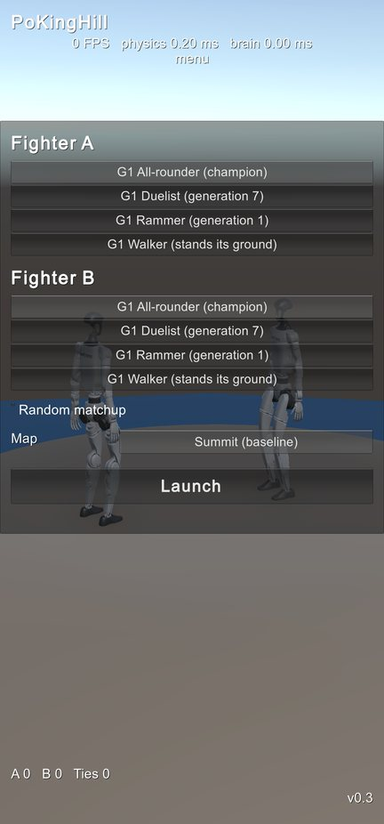
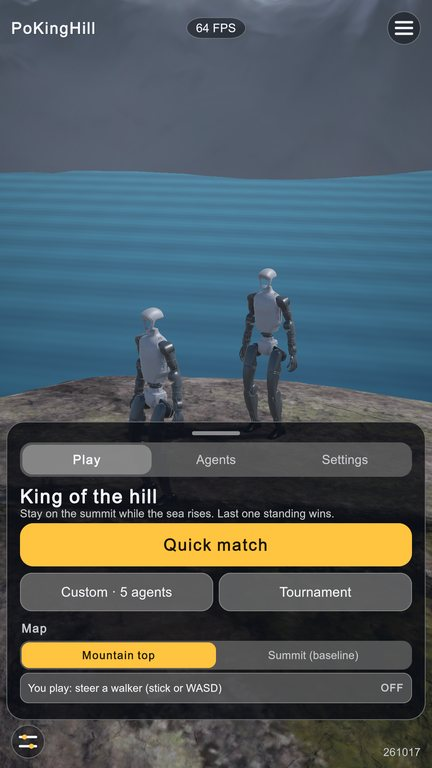
Annotations
- Quick match: the champion against itself on Mountain top, one tap.
- Custom · N agents uses the Agents tab ticks; Tournament runs semi-finals and a final.
- You play: the player steers the walker brain with an on-screen stick or WASD.
- Corners stay visible above the sheet: debug (bottom left), version 261017 (bottom right).
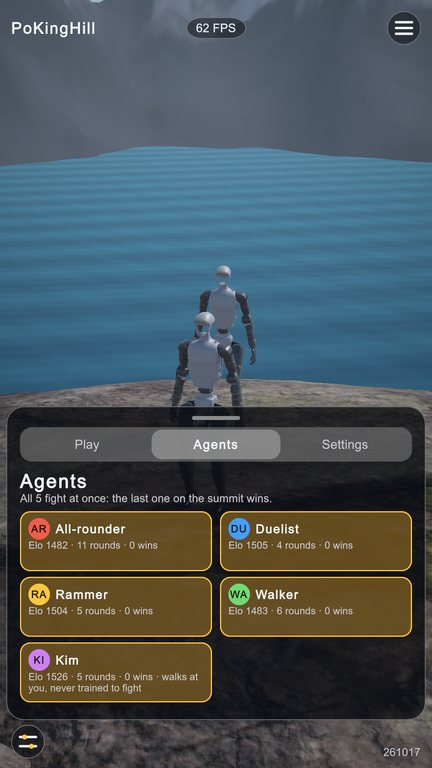
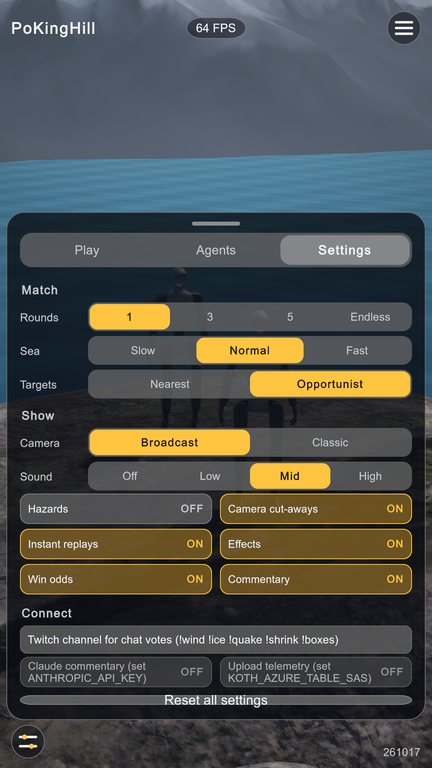
In the round
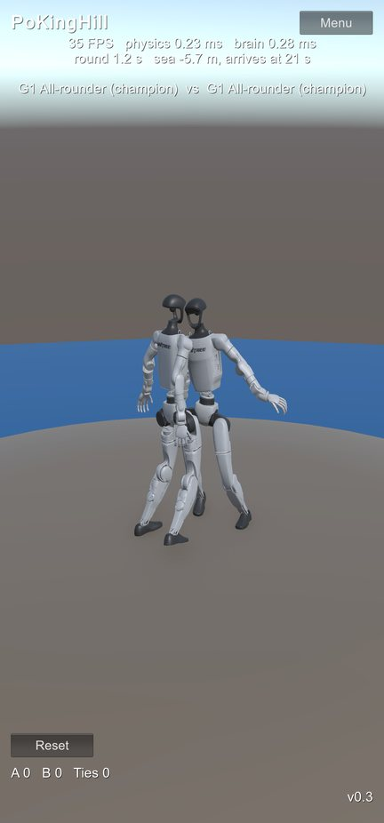
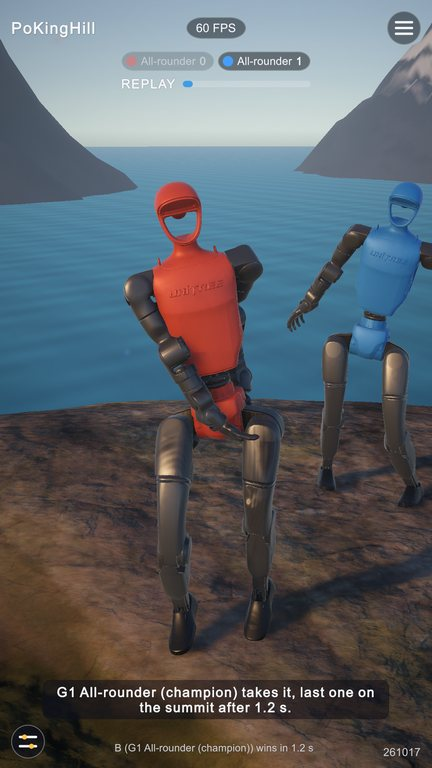
Annotations
- Badges carry each fighter's colour, which is also its torso paint.
- Clock and sea bar: the bar fills as the water rises toward the summit.
- Win odds: the exported critic when one exists, otherwise a labelled physical estimate.
- Physics and brain timings moved to the debug panel (or the telemetry HUD setting).
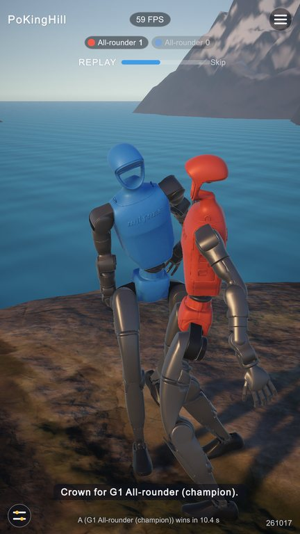
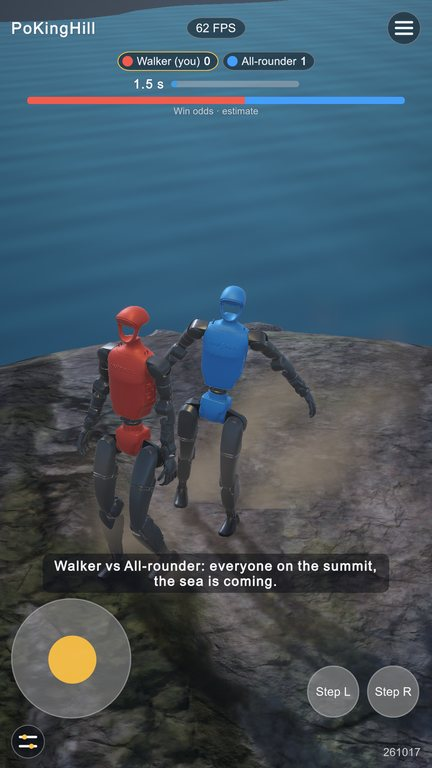
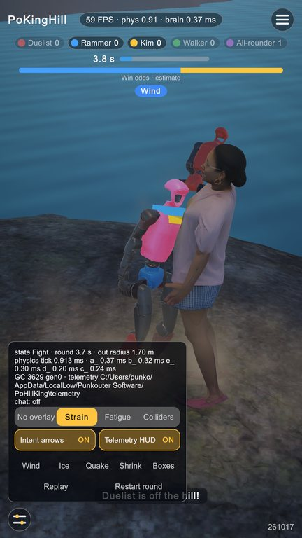
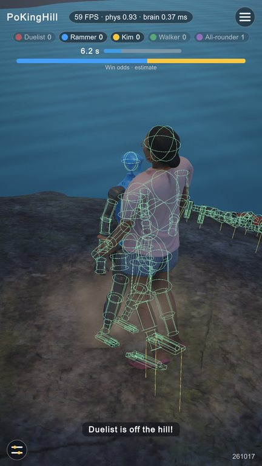
Result
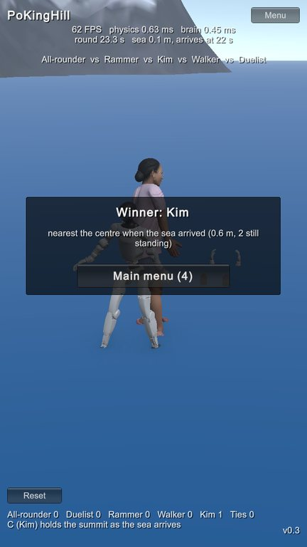
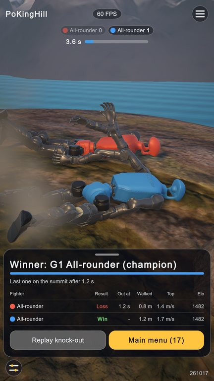
Annotations
- Headline and a stripe in the winner's colour; how it was won.
- Per fighter: result, out time, distance walked, top speed, Elo with the change from this round.
- Replay knock-out and Next round / Main menu with a countdown; in a tournament the bracket is listed.
Aspect ratios (portrait)
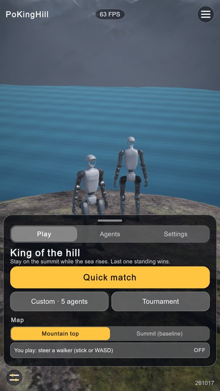
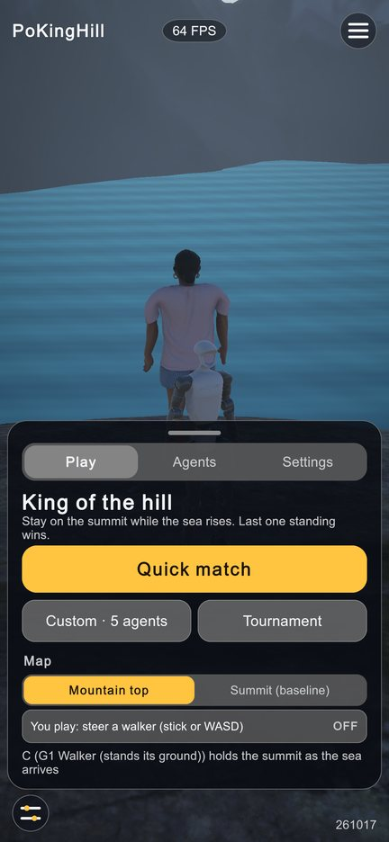
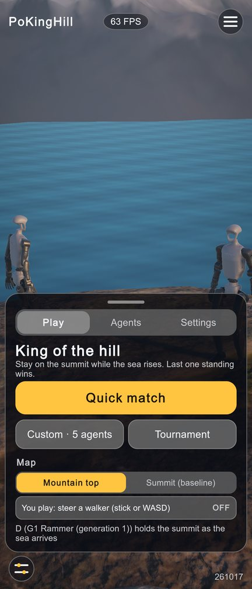
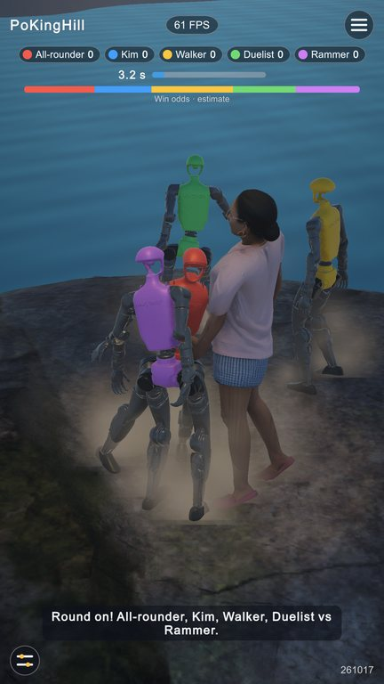
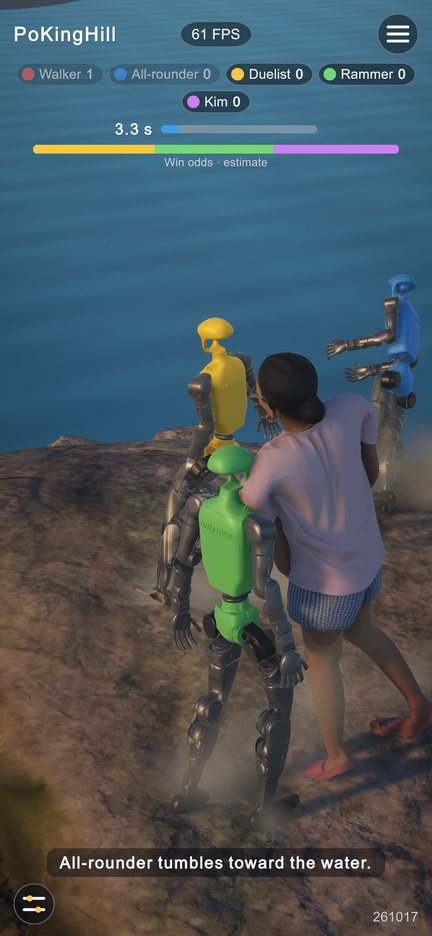
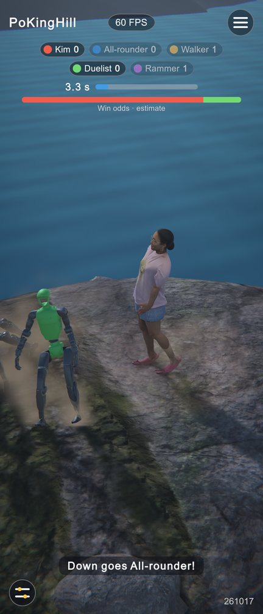
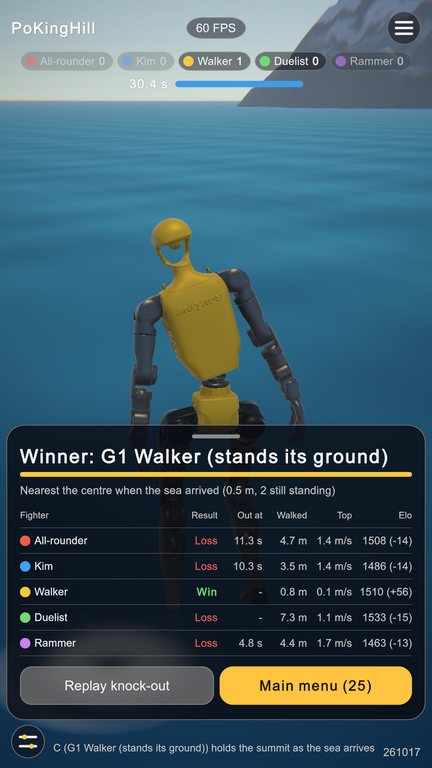
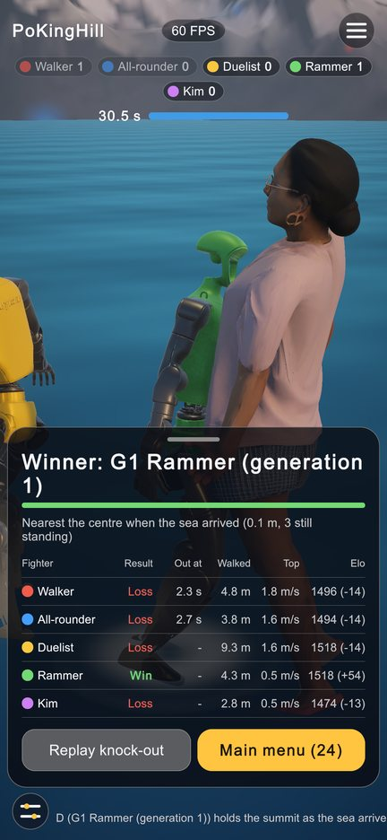
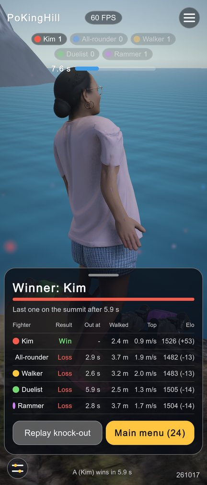
Checks
| Check | Result |
|---|---|
| State flow Menu → Fight → Result → Menu, and back to the menu mid-round (PlayMode tests) | 2 / 2 pass |
| Scene integrity: no missing scripts, every HUD/camera/effects reference wired, no PhysX (EditMode) | 21 / 21 pass |
| Console during the capture runs at 16:9, 19.5:9, 21:9 (exceptions, errors, NullReference) | 0 |
| Safe area in the Device Simulator (960×2658 phone, 92 px top cut-out) | top padding 90.3 units = 24 + 92 × 1920/2658 |
| No vertical scrolling: every sheet fits one viewport at 16:9 (the tightest ratio) | yes (Settings is the tallest) |
| Combat statistics gate after the rewrite (200 rounds, champion vs itself) | 99 % decided, median 8.05 s (CPU reference 98.5 %, 8.40 s) |
Not checked: the safe-area screenshots themselves (captures come from the Game view, not the simulator window), the audio output, and a real device.